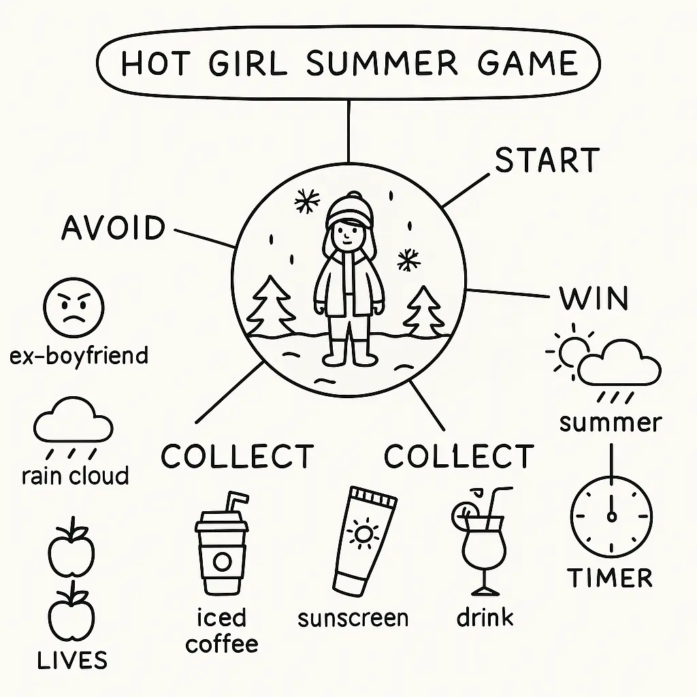
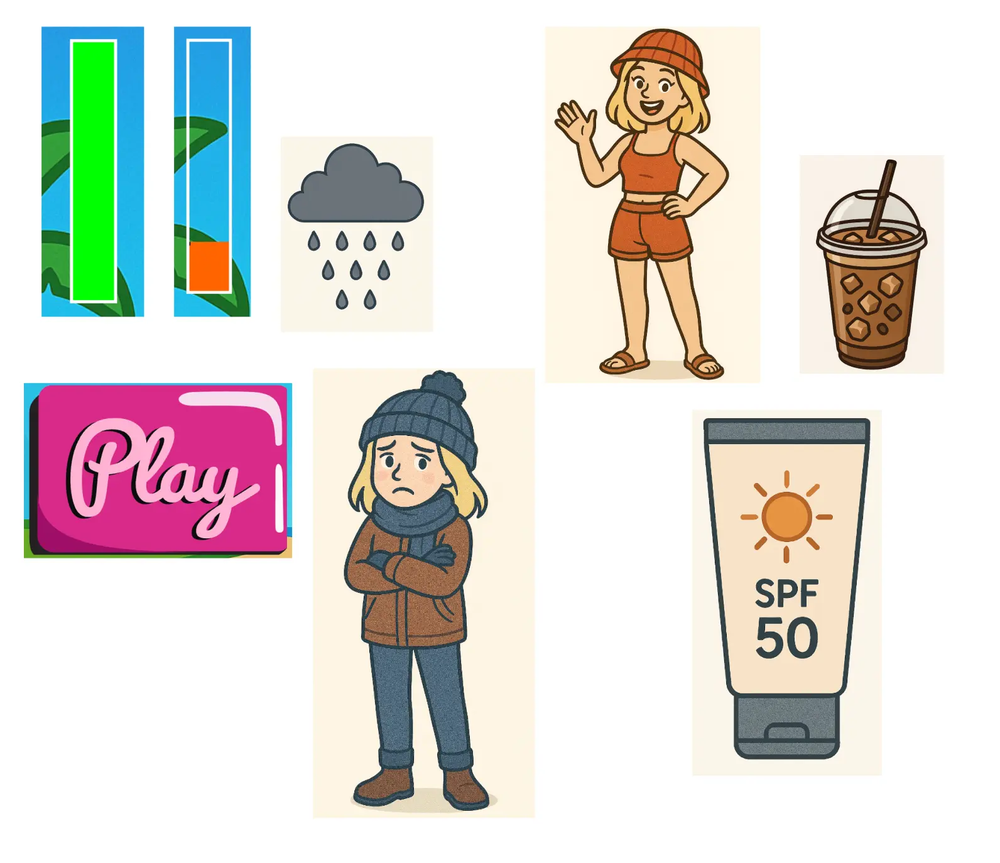
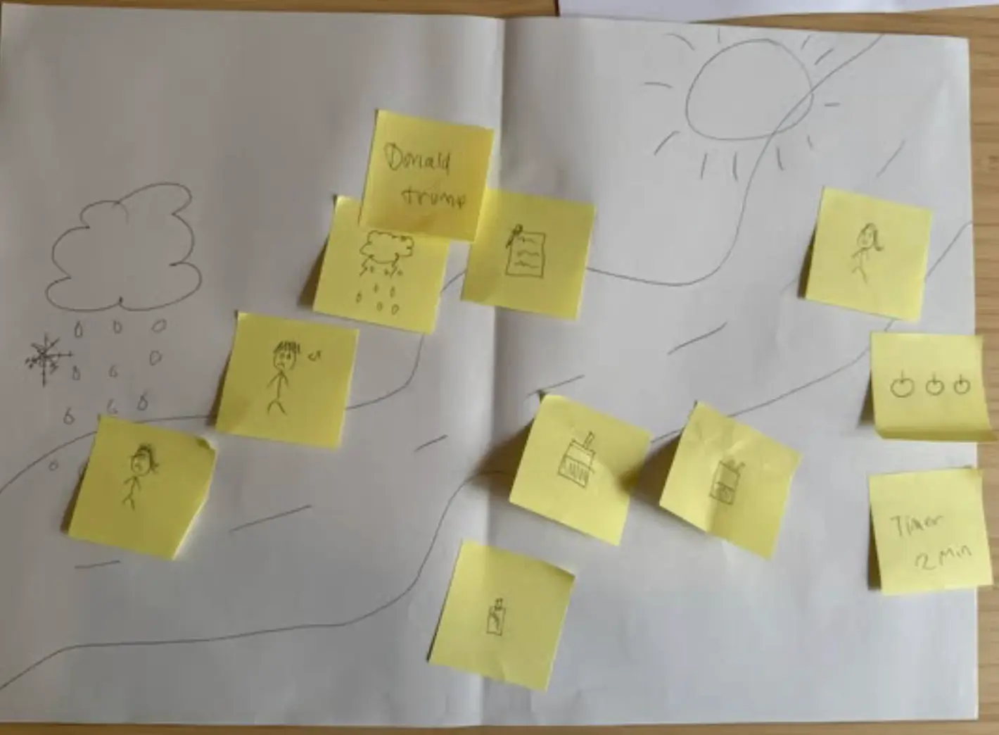
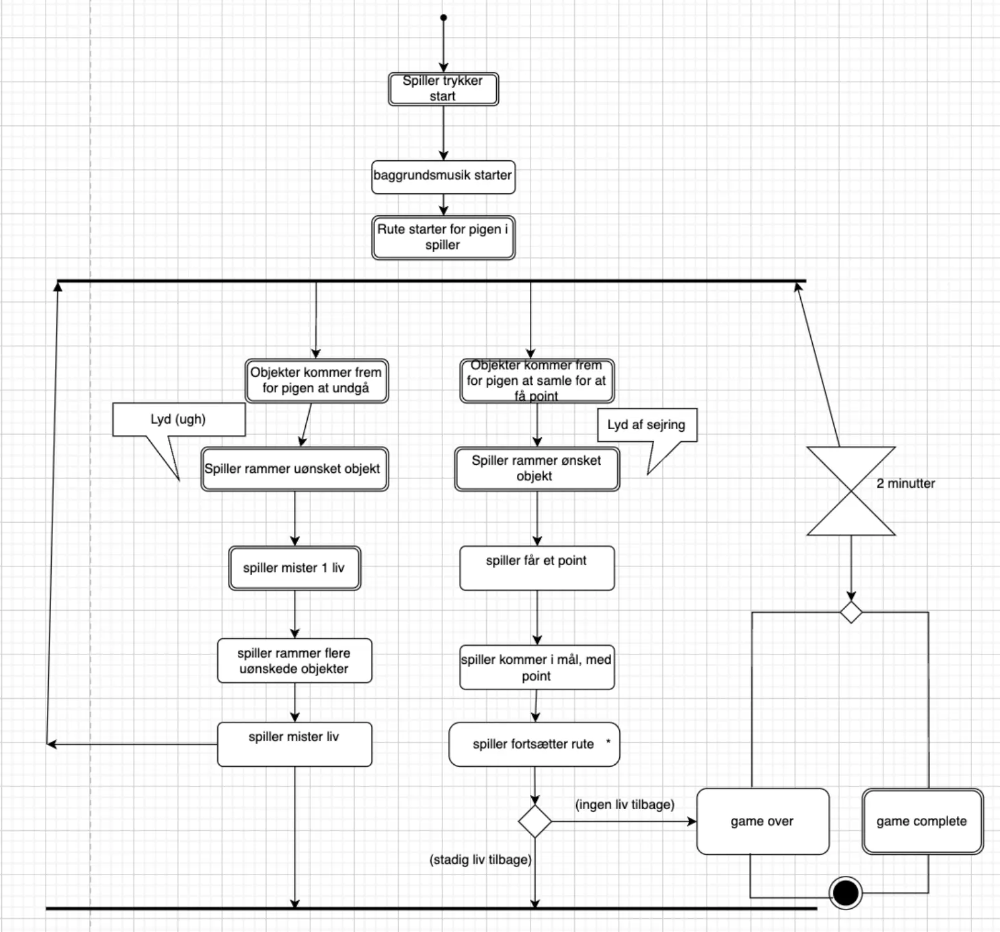
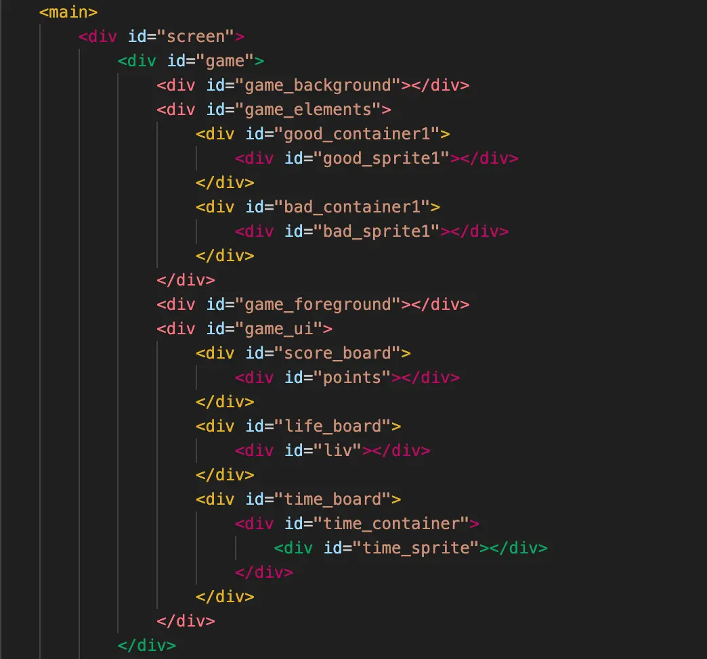

Animation.
Spil ide.
Jeg påbegyndte mit spil, med en masse forskellige ideer, jeg endte ud med dette som vises i illustrationen af mit mindmap. Jeg kunne dog hurtigt vurdere at jeg var for ambitiøs ifht mine evner, jeg lærte rigtig meget igennem undervisningen, som ledte mig til en mere simpel udgave og hermed havde jeg et relativt færdig spil. Med den feedback jeg modtog lærte jeg rigtig meget om emnet animation og om mig selv. Denne feedback har jeg taget med mig videre i de efterfølgende processer af design, samt den generelle arbejdsprocess.
Grafik.
Illustrationer i spillet er med til at skabe stemning, understøtte spillets tema og gøre oplevelsen mere visuel og engagerende for spilleren. Ved at udarbejde illustrationer tidligt i processen kunne jeg sikre en ensartet stil og et klart visuelt udtryk, som hjælper med at formidle spillets univers og funktioner.
Assets.
En papirprototype anvendes som et tidligt redskab i spiludviklingen for at visualisere og afprøve spillets idé, struktur og mekanikker, inden den egentlige kodning påbegyndes. Ved at arbejde med en simpel, håndtegnet version af spillet kan man hurtigt identificere styrker og svagheder i designet, justere regler og layout samt indsamle feedback. Dette sparer tid og ressourcer i den senere udviklingsproces og sikrer et mere gennemarbejdet og brugerfokuseret slutprodukt.
Teknik.
Et aktivitetsdiagram bruges i den tidlige fase af spiludviklingen for at skabe et overblik over spillets struktur, funktioner og brugerens interaktion. Diagrammet viser typisk, hvordan spilleren bevæger sig gennem forskellige skærmbilleder eller spilelementer, og hvordan de enkelte dele hænger sammen. Ved at udarbejde et spildiagram inden kodningen påbegyndes, kan man planlægge logikken i spillet, undgå fejl og sikre en mere effektiv og målrettet udviklingsproces..
Kodning.
I dette projekt har jeg udviklet et simpelt browserbaseret spil ved hjælp af HTML, CSS og JavaScript. Jeg har brugt HTML til at strukturere spillets layout, CSS til at designe det visuelle udtryk, og JavaScript til at programmere spillets logik og interaktioner. Gennem projektet har jeg arbejdet med begreber som event handling, animationer og game loops. Det har givet mig en nogenlunde forståelse for, hvordan man bygger interaktive og engagerende brugeroplevelser direkte i browseren.
